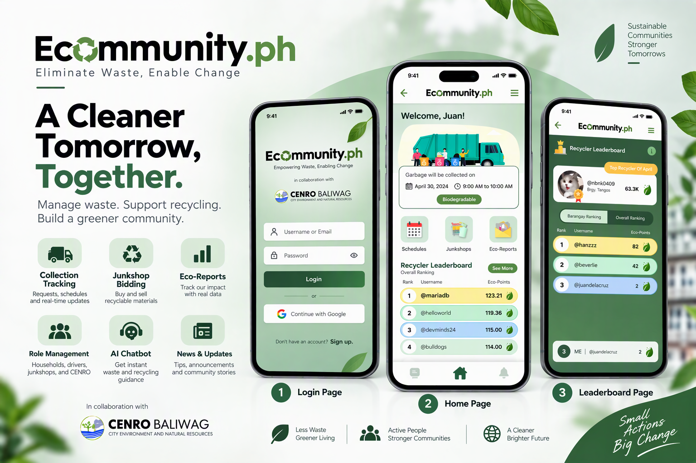
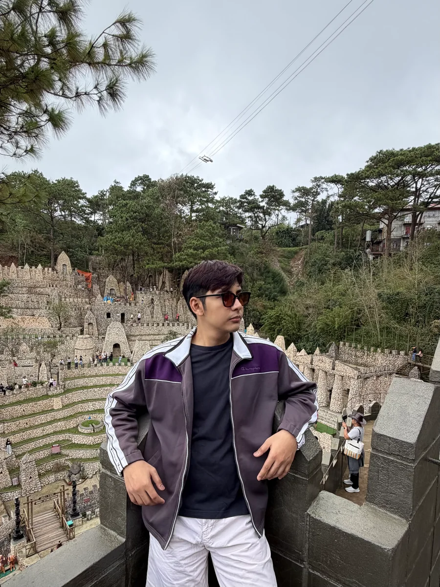
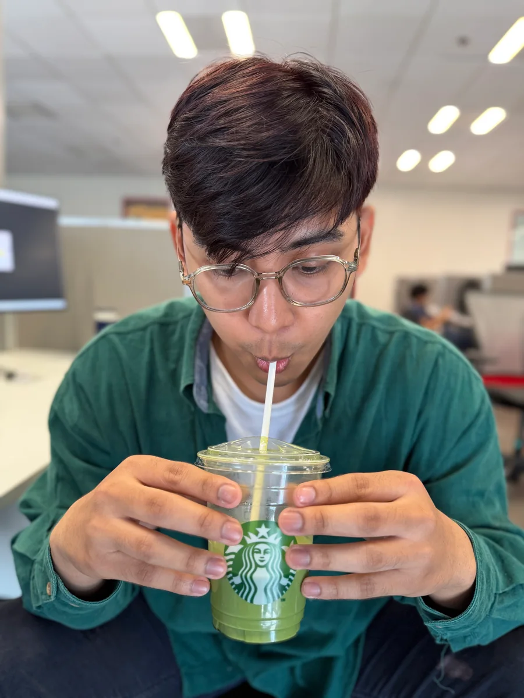
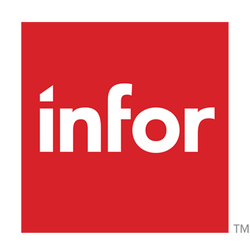
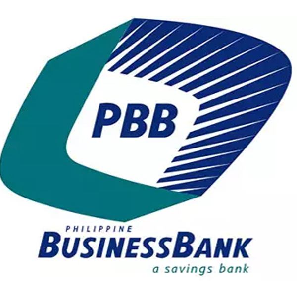
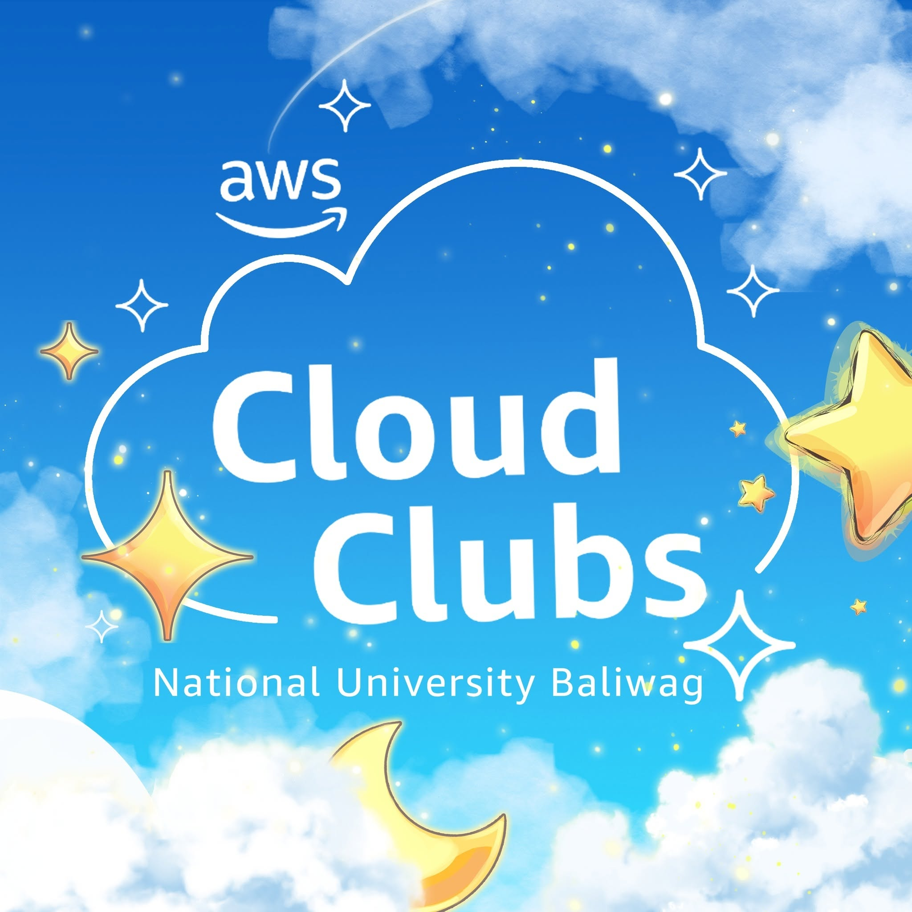
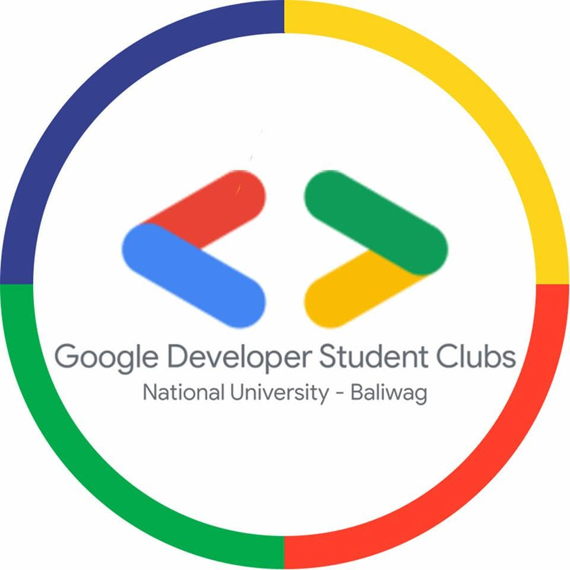

Understand
Get clear on the people, constraints, and job the software needs to do.
SOFTWARE ENGINEER · PHILIPPINES
I build apps and enterprise software.
I’ve built mobile apps, contributed to enterprise software, and explored connected-device projects. I care about how software works—and how it feels to use.

ECOMMUNITY.PH · MOBILE APP

BUILT WITH TEAMS AT
01 / HOW I WORK
From understanding the problem to checking the last detail, I keep the work clear, collaborative, and grounded in how it will actually be used.
Get clear on the people, constraints, and job the software needs to do.
Choose the right tools, make the important decisions visible, and keep the experience useful.
Exercise real workflows, catch edge cases, and make the result dependable.
Deliver something people can use, then learn from what happens next.
02 / SELECTED WORK
A few projects that show how I think, build, and make the useful feel considered.
03 / THE PERSON BEHIND THE BUILDS
I’m Ernest—a software engineer who enjoys seeing a problem through from first idea to the details that make it dependable.
I’ve worked in enterprise software, mobile banking, quality automation, student technology communities, and independent projects. Building and testing are both part of how I make software better.
TOOLS I REACH FOR
Useful software, thoughtful execution.
Java · C# · Dart · TypeScript · JavaScript · Python · Flutter · React · .NET · Node.js
Selenium · NUnit · REST APIs · Jira · Azure DevOps · Agile / Scrum · SDLC
Infor Landmark (LPL) · Microsoft SQL Server · Firebase · MySQL · PostgreSQL · Arduino
04 / SKILLS & TECHNOLOGIES
Tools I’ve worked with across enterprise software, mobile and web apps, testing, and connected devices.
Programming and query languages
Mobile, web, and service development
Enterprise, cloud, databases, and hardware
How I build, validate, and work with teams
Applied in development and workflow automation
05 / EXPERIENCE
Each role gave me another way to understand what makes software useful and reliable.
Building enterprise HR Talent modules across Java, LPL, and Microsoft SQL Server.

InforBuilt banking features with Flutter and FlutterFlow, integrating REST APIs with PostgreSQL.

Philippine Business BankAutomated 50+ existing ERP test cases using C#, Selenium, and NUnit.
Coordinated cross-functional events and brought industry speakers to the community.

AWS Cloud Club NU BaliwagBuilt client and independent applications, including mobile, web, and connected-device projects.
Directed four technical leads, hosted workshops and tech talks, and delivered a campus voting platform used by about 400 students.

Google Developer Student Clubs NU BaliwagDeveloped and deployed a Flutter app for campus Techfest, and ran Flutter workshops and Study Jams for fellow students.
06 / RECOGNITION
Awards, academic milestones, and credentials earned along the way.

B.S. Information Technology, NU Baliwag.

Recognized for student leadership, including Executive Director’s List (Rank 5) and the Excellent Effort Award, with additional nominations for service and student-organization contributions.

Built generative AI solutions for real-world organizational challenges.

Harvard’s introduction to computer science explores algorithms, data structures, programming, and computational thinking. The course develops problem-solving skills through hands-on programming assignments.
Verify certificate ↗︎An introductory AWS Educate badge covering foundational cloud operations concepts and the AWS Well-Architected Framework. The credential introduces how cloud environments are operated and designed for reliability.
Verify badge ↗︎07 / THE NEXT GOOD THING
Have an idea, a problem to solve, or just want to talk about the work?
Start a conversation